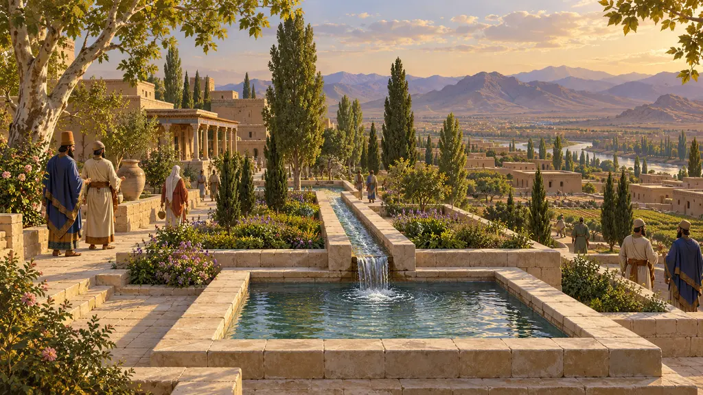
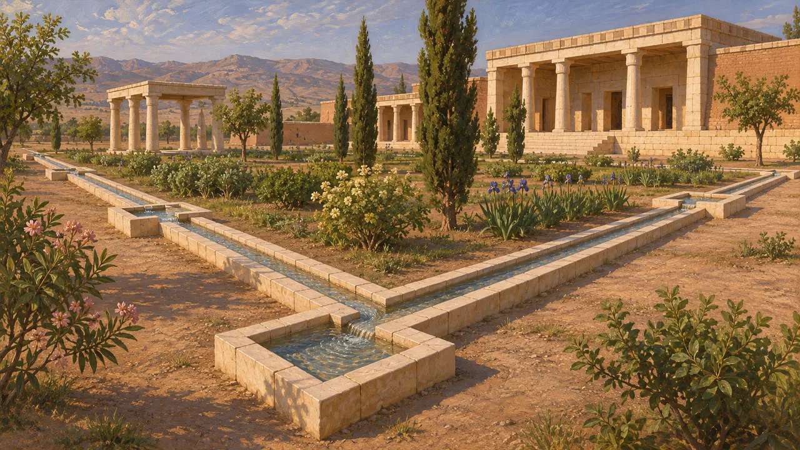
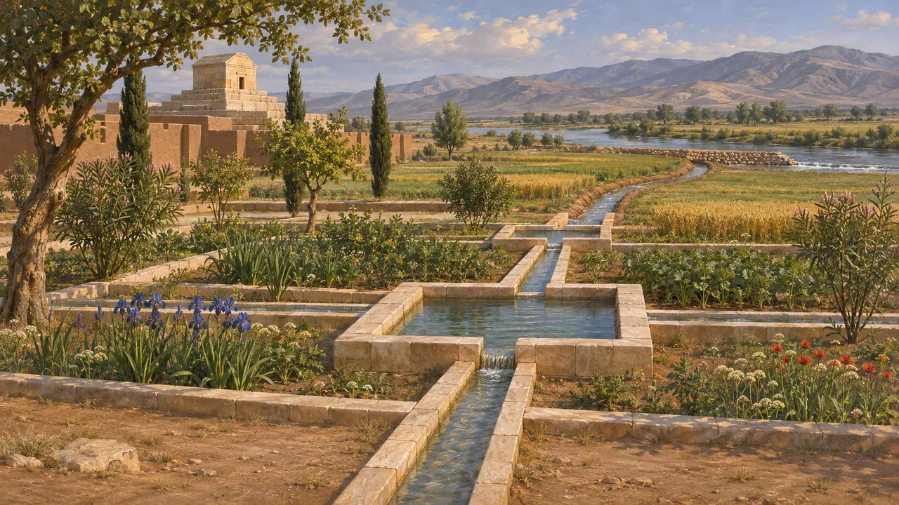
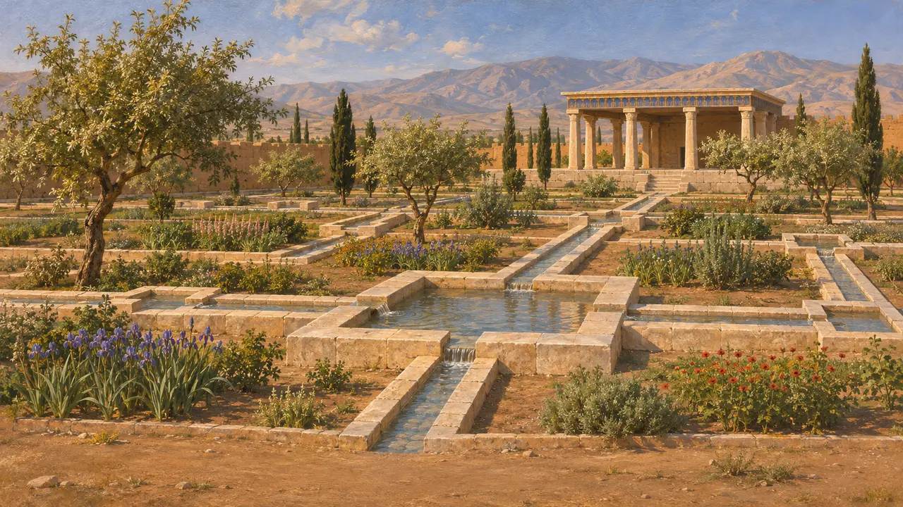
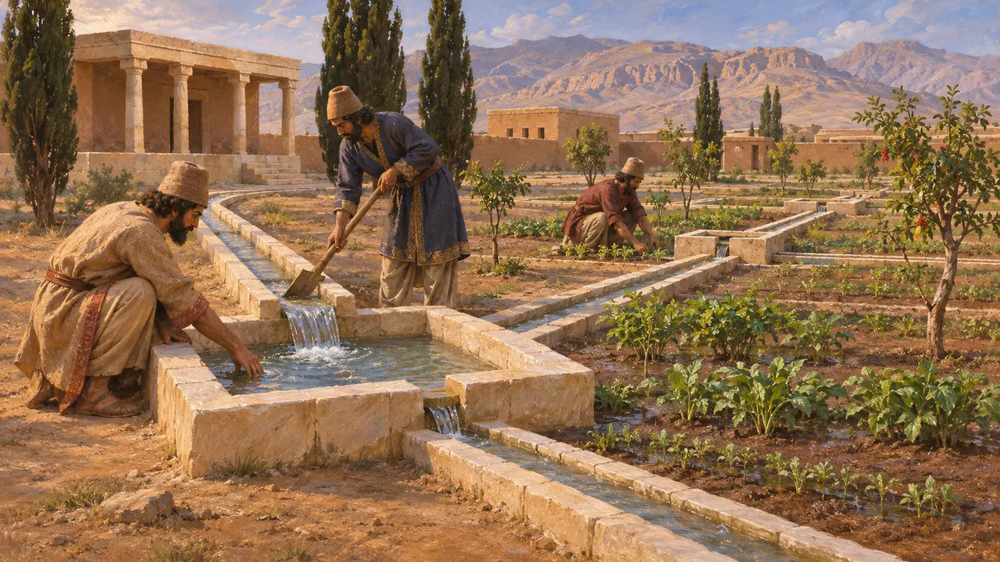
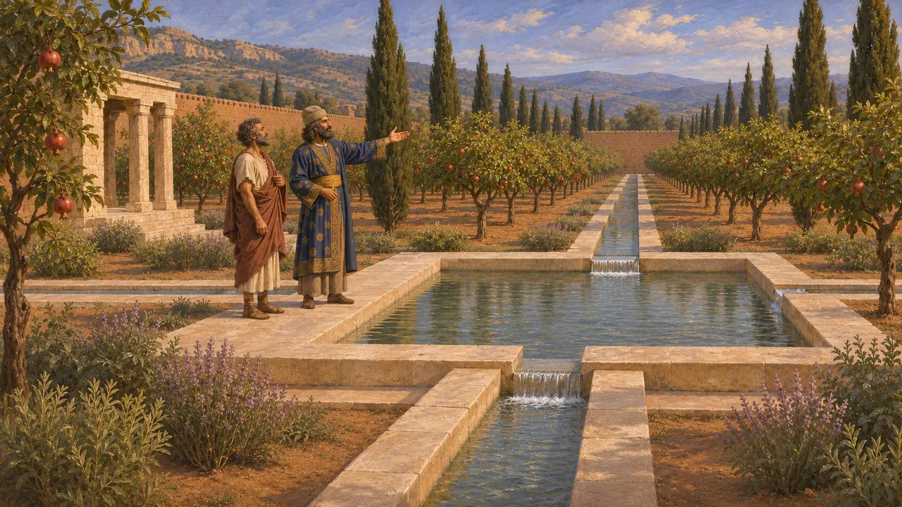

水渠
带水池的切石园林水道，帕萨尔加德，约公元前540-前530年
在帕萨尔加德，居鲁士的工匠用切割的石灰石砌成窄渠，每隔一段设有小方池，引水穿过御花园。这是已知现存最早的石砌规整园林水渠之一。它们展示了波斯诸王如何借助受控的水流，让干旱的高原平野变得葱绿，并以此彰显王权。
游戏中： 游戏将水渠列入住房类建筑。帕萨尔加德真实的石砌水渠服务于宫殿旁的御花园，而非普通街区，因此游戏简化了其所处环境。

居鲁士花园的石渠
见于史载戴维·斯特罗纳克于20世纪60年代初在帕萨尔加德的发掘，揭示出一条条宽约25厘米的石灰石水渠，沿寝宫前一座长方形花园的边缘延伸，并靠近园中的亭阁。水渠每隔一段便嵌有小型方池。石块经过精心切凿与拼合，与附近宫殿的精美石工相称。
D. Stronach, Pasargadae, 1978

水从何处来
见于史载帕萨尔加德坐落于普尔瓦尔河平原上，园中水渠很可能引此河之水。后来对平原及周边河谷的调查又发现了其他古代水利工程，包括水坝和渠道。园中水渠大概是平原上更大治水体系中最为精巧的部分。
D. Stronach, Pasargadae, 1978; R. Boucharlat and C. Benech, 'Organisation et aménagement de l'espace à Pasargades', Arta, 2002

四分园，抑或别的什么
争夺中斯特罗纳克将这些水渠复原为一座四分花园的框架，并认为它是后世波斯四分式花园的早期源头。另有学者怀疑其布局是否真为四分。法国与伊朗联合团队的地球物理勘测表明，水系与种植的布局可能更为复杂。确切的设计至今仍有争议。
D. Stronach, 'The Royal Garden at Pasargadae: evolution and legacy', 1989; R. Boucharlat and C. Benech, Arta, 2002

引水入旱地
古代记述写作于公元前2世纪的波利比乌斯说，波斯人统治亚洲时，凡将水引至此前从未灌溉之地者，皆可获该地五代的使用权。他是在讲述通往赫卡尼亚途中的地下水渠时提到此事的。他的记载年代较晚，但与帕萨尔加德所见的王室对灌溉的重视相吻合。
Polybius 10.28

一位希腊访客眼中的御花园
古代记述色诺芬在一篇由苏格拉底讲述的对话中说，波斯王子小居鲁士曾向斯巴达人吕山德展示他在萨第斯的园林，园中树木种成笔直的行列。吕山德赞叹其井然有序，居鲁士则说全园都是他亲自丈量布置的，有些树还是他亲手所植。这次拜访发生在约公元前407年，远在帕萨尔加德之后，但它反映出希腊人如何看待精心规划的波斯园林。
Xenophon, Oeconomicus 4.20-25
来源
- D. Stronach, Pasargadae, 1978
- D. Stronach, 'The Royal Garden at Pasargadae: evolution and legacy', 1989
- R. Boucharlat and C. Benech, 'Organisation et aménagement de l'espace à Pasargades', Arta, 2002
- Polybius 10.28
- Xenophon, Oeconomicus 4.20-25